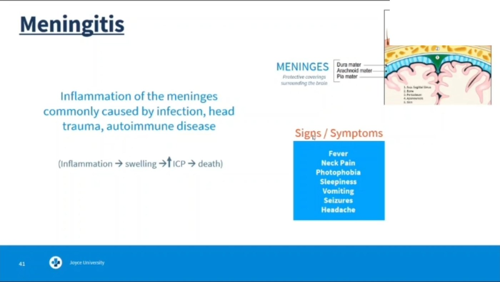
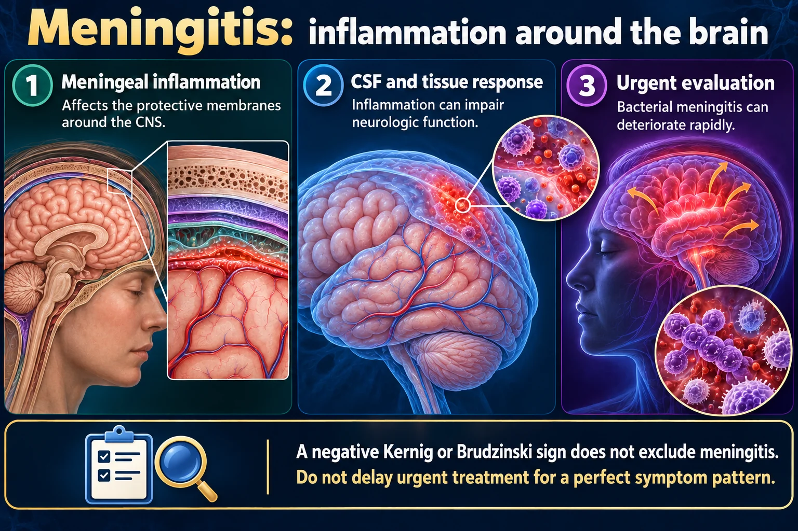
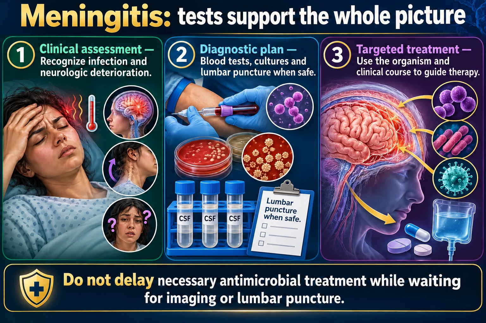

Meningitis 🦠
Inflammation of the meninges — bacterial is the emergency
Meningitis is inflammation of the membranes that wrap the brain and spinal cord. The infection itself is bad; what kills people is the swelling inside a skull that cannot expand. Two facts do most of the work on an exam: bacterial meningitis is a droplet-precaution emergency, and the first thing to change is not the neck or the fever — it is the patient’s level of consciousness.Side note (newer guidance): Meningitis is inflammation of the membranes around the brain and spinal cord. Bacterial disease can deteriorate rapidly through neurologic injury or sepsis. Assess urgently and use empiric precautions based on the suspected organism and local protocol.
📄 Simple Nursing original — opens in Drive →
Preview the Simple Nursing sheet here
WHAT IT IS & HOW IT GETS THERE
STEP 1 · CAUSEThree membranes, one fluid-filled space, and a rigid box that will not let any of it swell.

🧅 The meninges — the layers that get inflamed
Meningitis = inflammation of the meninges, the lining of the brain and spinal cord. The infection lives in the subarachnoid space, the CSF-filled gap between the arachnoid and the pia — which is exactly where you put the lumbar-puncture needle to sample it.

A negative Kernig or Brudzinski sign does not exclude meningitis. Do not delay urgent treatment for a perfect symptom pattern.
Read the picture
Meningeal inflammation
Affects the protective membranes around the CNS.
CSF and tissue response
Inflammation can impair neurologic function.
Urgent evaluation
Bacterial meningitis can deteriorate rapidly.
Recognize
Fever, headache, neck stiffness and altered mental status; the full pattern may be absent.
Infants
Poor feeding, irritability, reduced responsiveness or a bulging fontanelle may occur. Classic adult signs can be absent.
Nursing priorities
Prompt escalation, neurologic monitoring and prescribed antimicrobial treatment. Use organism-specific precautions.

Do not delay necessary antimicrobial treatment while waiting for imaging or lumbar puncture.
Read the picture
Clinical assessment
Recognize infection and neurologic deterioration.
Diagnostic plan
Blood tests, cultures and lumbar puncture when safe.
Targeted treatment
Use the organism and clinical course to guide therapy.
CSF
Cell count, glucose, protein and microbiologic testing help distinguish causes. Appearance alone is not diagnostic.
Before lumbar puncture
Assess contraindications. Brain imaging is needed for selected patients, not automatically for everyone.
After the procedure
Monitor symptoms, neurologic status and the puncture site; follow the procedural care plan.
🚨 BACTERIAL — “Bad news, most contagious”
The medical emergency. Onset is fast — hours. Common organisms in adults include Streptococcus pneumoniae and Neisseria meningitidis; Haemophilus influenzae type b in unimmunized children; Listeria at the extremes of age.
Untreated it can kill within a day. Antibiotics are started immediately — after blood cultures, and without waiting for the LP result if the LP will be delayed.
🧫 VIRAL — “Very common, most tested”
Also called aseptic meningitis. Usually enteroviruses. It is far more common, generally much milder, and most people recover with supportive care — fluids, antipyretics, analgesia, rest, and a dark quiet room.
The patient still feels awful: headache, photophobia, stiff neck, fever. You cannot tell viral from bacterial by symptoms alone — that is what the CSF is for.
🧭 Other causes
- Fungal — especially Cryptococcus in immunocompromised patients (HIV)
- Head trauma — a basilar skull fracture creates a direct road in for bacteria
- Neurosurgery, shunts and invasive devices
- Spread from a nearby infection — sinusitis, otitis media, mastoiditis
- Autoimmune / inflammatory disease such as lupus
🫂 Who is at risk
- Crowded living — college dorms, military barracks, dormitory-style housing
- Unimmunized children and adults
- Immunocompromised — HIV, chemotherapy, chronic steroids, asplenia
- Very young and very old
- Recent neurosurgery, head trauma or ENT infection
⚠️ Why this becomes an ↑ ICP emergency
That chain is why every intervention on this page is about lowering pressure and lowering stimulation at the same time as killing the organism.
SIGNS & THE TWO NAMED TESTS
STEP 2 · CLUESLearn the two eponyms precisely — students lose marks by swapping them, and the exam knows it.
🅷 The classic picture
⭐ In ADULTS, what changes first
Agitation, irritability and altered level of consciousness are the first sign — the same earliest sign as any rising intracranial pressure.
- Restless → irritable → confused → drowsy
- Severe headache, photophobia
- Nuchal rigidity — the neck resists forward flexion
- Fever, chills, nausea, vomiting
- Seizures
- Progression to coma and death if untreated
🚨 The rash you must not miss
Meningococcal disease can produce a petechial or purpuric rash that does not blanch when you press on it (the glass test). It means bacteria and clotting factors are in the bloodstream.
A non-blanching rash with fever = medical emergency, escalate immediately. It can progress to widespread purpura, DIC and adrenal hemorrhage (Waterhouse–Friderichsen syndrome).
🦵 KERNIG’S SIGN — bend the hip, then straighten the knee
Definition: with the patient supine, flex the hip to 90° with the knee bent, then attempt to extend the knee. Pain and resistance in the hamstring and lower back is a positive Kernig’s sign.
🪑 BRUDZINSKI’S SIGN — flex the neck, watch the legs
Definition: with the patient supine, passively flex the neck (chin toward chest). If the hips and knees flex involuntarily — you never touched the legs — that is a positive Brudzinski’s sign.
Both signs happen because inflamed meninges are stretched by the movement, and the body reflexively pulls away from that stretch.
🎯 The Kaplan scenario, decoded
“Suspected meningitis — when the neck flexes, the hip and knee also flex. Priority action?”
That description is a positive Brudzinski’s sign. The action is to report the finding to the provider immediately — it confirms meningeal irritation in a patient who may be hours from deteriorating.
⚠️ Both signs can be NEGATIVE and it still be meningitis
Kernig and Brudzinski are specific but not sensitive — a positive one is meaningful, a negative one rules nothing out. They are also unreliable in infants, the very old, and the deeply obtunded.
Never let a negative Kernig talk you out of escalating a febrile patient with a headache and new confusion.
👶 THE PEDIATRIC PICTURE — different signs entirely

DIAGNOSIS — CT, THEN LUMBAR PUNCTURE
STEP 3 · CONFIRMSide note (newer guidance): 🧪 DIAGNOSIS — CLINICAL ASSESSMENT AND SAFE TESTINGThe CSF is the answer sheet. Getting to it safely is the nursing part.
💉 The lumbar puncture
🚨 CT scan is usually done FIRSTSide note (newer guidance): Imaging before lumbar puncture is selective
If intracranial pressure is already high, draining CSF from the lumbar space creates a pressure gradient that can pull the brain downward — herniation.
So a CT head is obtained first when there are signs of raised pressure or a mass: papilledema, new focal neurological deficit, seizure, severely depressed LOC, or immunocompromise.
Never send a patient for a lumbar puncture on your own initiative when they have focal deficits or a rapidly falling level of consciousness.
✅ Nursing care around the LP
Post-LP headache is worse upright and better flat — the classic pattern. Report clear drainage from the site, fever, or new leg weakness.
🧪 CSF results — normal vs viral vs bacterial
⭐ The comparison table to memorize
| CSF finding | BACTERIAL | VIRAL | Normal adult |
|---|---|---|---|
| Appearance | Cloudy / turbid | Clear | Clear, colorless |
| WBC | ↑↑↑ neutrophils | ↑ lymphocytes | 0–5 /mm³ |
| Protein | HIGH ↑↑ | Normal or slightly ↑ | 15–45 mg/dL |
| Glucose | LOW ↓ ⭐ | NORMAL ⭐ | 45–80 mg/dL (≈ ⅔ of serum) |
| Opening pressure | HIGH ↑↑ | Normal / mildly ↑ | 70–180 mmH₂O |
| Gram stain / culture | Positive | Negative | Negative |
Both types raise the white cell count — so the WBC alone does not tell you which. The glucose and the cell type do.
The numbers in the “Normal adult” column are typical adult reference ranges and vary by laboratory — always compare against the range printed on your patient’s result.
🧫 The other tests
- Blood cultures — draw before antibiotics whenever possible, but never let them delay treatment in a deteriorating patient
- CBC — leukocytosis with a left shift
- CT or MRI head — before the LP, and to look for complications such as abscess or hydrocephalusSide note (newer guidance): CT or MRI when indicated by neurologic findings or suspected complications; routine imaging before every lumbar puncture is not recommended.
- PCR panel on CSF — identifies viral and bacterial organisms fast
- Serum electrolytes — SIADH is a recognized complication
ISOLATION & NURSING CARE
STEP 4 · CAREProtect yourself, protect the unit, then lower the pressure and the noise around the patient.
⭐ Droplet vs Airborne — the two lists
| DROPLET · surgical mask | AIRBORNE · N95 |
|---|---|
| Pertussis | Measles |
| Influenza | Tuberculosis |
| Meningococcal or H. influenzae type b meningitis | Varicella — chickenpox / shingles (disseminated) |
| Pneumonia | |
| Private room · surgical mask + goggles · patient masks for transport | N95 for staff · negative-pressure room · door CLOSED · patient wears a surgical mask for transport |
Meningitis is droplet, not airborne. You do not need an N95 and you do not need a negative-pressure room — but you do need a private room and a mask before you walk in.Side note (newer guidance): Precautions depend on the organism. Meningococcal and H. influenzae type b disease require droplet plus standard precautions until the specified effective-treatment interval; other causes may differ.
🚨 Antibiotics: the clock is the treatment
In suspected bacterial meningitis, broad-spectrum IV antibiotics are started as soon as cultures are drawn — and immediately, without waiting, if the LP will be delayed. Every hour of delay costs outcome.
Dexamethasone is given in some adult bacterial cases to reduce the inflammatory injury; it is typically given with or just before the first antibiotic dose.
Viral meningitis gets supportive care; antibiotics do nothing for it, but they are often started until bacterial disease is excluded.
🚨 LOW blood pressure will kill
Septic shock is a real complication of meningococcal disease. A patient admitted with bacterial meningitis and a BP of 78/56 needs a bolus of IV isotonic fluid (0.9% NaCl) — that is the priority action.
Perfusion pressure to the brain is MAP − ICP; hypotension on top of raised ICP starves the brain twice over.
✅ The “LOW” bundle at the bedside
- Low light — dim the room, close the blinds; they have photophobia
- Low noise — quiet room, limit visitors, cluster nothing loud
- Low pressure — no coughing, no straining, no bending the extremities, no hip flexion
- HOB elevated at least 30°, head midline
- Low BP is the emergency — treat it, don’t just chart it
⚡ Seizure precautions on admission
- Padded side rails, bed in the lowest position
- Suction and oxygen set up and working at the bedside
- IV access maintained
- Nothing hard or hot at the bedside; supervise ambulation
- Know where the rescue benzodiazepine is
🩺 Everything else you monitor
- Neuro checks + GCS on a schedule — compare with the last set
- Pupils — new inequality is an emergency
- Vital signs for Cushing’s triad and for septic shock (two opposite patterns)
- Strict intake and output — SIADH causes dilutional hyponatremia
- Sodium — falling Na⁺ lowers the seizure threshold further
- Skin — look for a spreading petechial or purpuric rash at every assessment
- Temperature — fever raises cerebral metabolic demand; treat it
CONTACTS, PREVENTION & TEACHING
STEP 5 · TEACHThe people in the next bed and the roommate at home are part of your assessment.
⭐ Prophylaxis for close contacts
After meningococcal (and H. influenzae type b) meningitis, people with close, prolonged contact need antibiotic prophylaxis — household members, intimate partners, roommates, childcare contacts, and health-care workers who had direct exposure to respiratory secretions (mouth-to-mouth, intubation, suctioning without a mask).
Agents used include rifampin, ciprofloxacin, or ceftriaxone. Warn about rifampin turning urine, sweat and tears orange and staining soft contact lenses, and that it reduces the effectiveness of oral contraceptives.
💉 Vaccines actually prevent this
- Meningococcal conjugate (MenACWY) — routine for adolescents; recommended for college first-years in residence halls, military recruits, asplenia and travel to high-risk areas
- Meningococcal B (MenB) — additional series for some adolescents and high-risk groups
- Pneumococcal — infants, older adults and chronic disease
- Haemophilus influenzae type b (Hib) — routine childhood series
🏠 Discharge teaching
- Finish the entire antibiotic course even once feeling better
- Expect fatigue, headaches and poor concentration for weeks
- Return for fever, new headache, seizure, confusion, new weakness or a rash
- Attend follow-up hearing testing — sensorineural hearing loss is a common sequela, especially in children
- Household contacts must take their prophylaxis
⚠️ Complications to watch for
- Raised ICP and herniation — the immediate killer
- Seizures
- Septic shock and DIC (meningococcemia)
- SIADH → hyponatremia → more seizures
- Hydrocephalus from blocked CSF flow
- Hearing loss, cognitive and learning deficits
- Waterhouse–Friderichsen syndrome — adrenal hemorrhage with circulatory collapse
🎯 NCLEX traps on this topic
| The stem says… | The answer is… |
|---|---|
| “Suspected bacterial meningitis — first action?” | Place the client on droplet precautions / put on PPESide note (newer guidance): Initiate indicated empiric precautions and promptly assess airway, breathing, circulation and neurologic status |
| “Neck flexes → hip and knee also flex” | Positive Brudzinski’s sign — report immediately |
| “Supine, straightening the leg is very painful” | Positive Kernig’s sign |
| “Bacterial meningitis, BP 78/56 — priority?” | Administer a bolus of IV 0.9% sodium chloride |
| “Which CSF result fits bacterial?” | Cloudy, neutrophils, high protein, LOW glucose |
| “What comes before the lumbar puncture?” | Clinical safety assessment; neuroimaging only when indicated |
| “After the LP, what do you monitor at the site?” | The dressing, for clear fluid drainage |
| “Teaching unlicensed personnel entering the room” | Wear a mask |
| “Infant with meningitis — expected finding?” | Bulging fontanelle and a high-pitched cry |